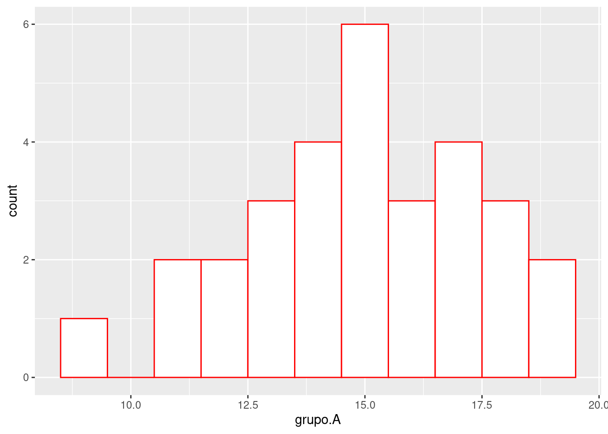

2 Distribuciones de frecuencias
En este capítulo desarrollaremos el concepto de distribución estadística. Seguiremos desarrollando el ejemplo de notas de los exámenes finales de dos grupos de estudiantes e introduciremos otros ejemplos. Exploraremos el concepto de frecuencia de observaciones, cómo visualizarlos y estimar sus algunas de sus características.
2.1 Explorando los datos
Recordemos las muestras de exámenes finales que vimos en el capitulo anterior.
Grupo A (teórico-práctico):
15, 12, 11, 18, 15, 15, 9, 19, 14, 13, 11, 12, 18, 15, 16, 14, 16, 17, 15, 17, 13, 14, 13, 15, 17, 19, 17, 18, 16 y 14
Grupo B (teórico):
11, 16, 14, 18, 6, 8, 9, 14, 12, 12, 10, 15, 12, 9, 13, 16, 17, 12, 8, 7, 15, 5, 14, 13, 13, 12, 11, 13, 11 y 7
A simple vista no es tan fácil darse cuenta «qué pasa» con estos datos. Podemos por lo pronto darnos cuenta de que el grupo B tiene más notas de un solo dígito, pero más allá no resulta obvio cómo les fue en los distintos grupos.
2.2 Tablas de frecuencias
Para darnos cuenta mejor de las estructuras que estamos analizando podemos construir una tabla de frecuencias, que en este caso es un resumen de cuántos alumnos sacaron cuál nota de las posibles (sobre veinte).
| Nota | Grupo A | Grupo B |
|---|---|---|
| 1 | 1 | 2 |
| 2 | 2 | 3 |
| 3 | 2 | 5 |
| 4 | 3 | 4 |
| 5 | 4 | 3 |
| 6 | 6 | 2 |
| 7 | 3 | 2 |
| 8 | 4 | 1 |
| 9 | 3 | 1 |
| 10 | 2 | |
| 11 | 1 | |
| 12 | 1 | |
| 13 | 2 | |
| 14 | 2 | |
| 15 | 1 |
Ahora podemos hacer algunas observaciones adicionales. Se nota que el rango (distancia entre el menor y el mayor valor del conjunto) es más amplio en el grupo B que en el grupo A. Posiblemente también nos damos cuenta que el valor más frecuente del grupo A (15) es superior al más frecuente del grupo B (12).
Ejemplo en R
Si bien es posible hacer una tabla de frecuencias a mano, simplemente contando las observaciones en cada categoría y anotando el resultado en orden, también tenemos funciones en R para el propósito.
table(
c(15, 12, 11, 18, 15, 15, 9, 19, 14, 13, 11, 12, 18, 15, 16, 14, 16, 17, 15, 17, 13, 14, 13, 15, 17, 19, 17, 18, 16, 14)
)#>
#> 9 11 12 13 14 15 16 17 18 19
#> 1 2 2 3 4 6 3 4 3 2En este ejemplo estamos usando dos funciones, una dentro de otra. La función c, le pide a R que arme un cconjunto de datos, y los datos que queremos usar van entre paréntesis y separados por coma. Esto, a su vez, lo estamos haciendo dentro de la función table que genera una tabla de frecuencias.
También es posible darle un nombre a los datos a usar o «asignarlos a una variable», lo cual puede ser útil cuando se quiere reutilizar. Esto se hace de la siguiente manera:
x <- c(15, 12, 11, 18, 15, 15, 9, 19, 14, 13, 11, 12, 18, 15, 16, 14, 16, 17, 15, 17, 13, 14, 13, 15, 17, 19, 17, 18, 16, 14)Con esto podemos usar x como alias para los datos que le asignamos. Entonces:
table(x)#> x
#> 9 11 12 13 14 15 16 17 18 19
#> 1 2 2 3 4 6 3 4 3 2nos da el mismo resultado.
Por lo general se recomienda usar nombres de variables que tengan algún sentido, en lugar de usar genéricos como x, y, z o a, b, c. En R las variables pueden tener múltiples caracteres (pero no espacios), por lo que podríamos ingresar:
grupo.A <- c(15, 12, 11, 18, 15, 15, 9, 19, 14, 13, 11, 12, 18, 15, 16, 14, 16, 17, 15, 17, 13, 14, 13, 15, 17, 19, 17, 18, 16, 14)y nos daría el resultado deseado:
table(grupo.A)#> grupo.A
#> 9 11 12 13 14 15 16 17 18 19
#> 1 2 2 3 4 6 3 4 3 22.3 Histogramas
Para seguir explorando las tablas que hemos creado en la sección anterior se pueden visualizar con un histograma. El histograma resume los datos dentro de algunos rangos, por ejemplo 8-9, 10-11, 12-13 etcétera, y se cuenta el número de observaciones dentro de cada rango.
Para nuestros datos obtenemos:
y
Comparando estos dos diagramas nos damos cuenta de que la estructura de los datos son disimilares. En el grupo A las notas se centran alrededor de quince, en cambio para el grupo B la concentración está en el rango diez-catorce, con un pico menor alrededor de siete.
Hacer un histograma con R es bastante sencillo. Usamos la función hist, de histograma y los datos que queremos visualizar. Si lo asignamos a una variable, como lo vimos en la parte de las tablas (con table).
grupo.A <- c(15, 12, 11, 18, 15, 15, 9, 19, 14, 13, 11, 12, 18, 15, 16, 14, 16, 17, 15, 17, 13, 14, 13, 15, 17, 19, 17, 18, 16, 14)
hist(grupo.A)La función hist tiene muchas opciones adicionales. Para conocerlas se puede ingresar ?hist (signo de interrogación y «hist») en la consola de R y aparecerá la descripción completa de ellas. Lo mismo es cierto para cualquier función de R. El mismo resultado se obtiene usando la función help(hist).
2.4 Polígono de frecuencias
Los datos también de pueden visualizar con un polígono de frecuencias. En este tipo de visualización ponemos un punto en la intersección de la nota (eje horizontal) y la frecuencia (eje vertical) y trazamos una linea entre los puntos. Una de las ventajas de este tipo de visualización es que facilita la comparación entre varias distribuciones ya que los podemos desplegar en un mismo diagrama.
Figure 2.1: Polígono de frecuencias de notas obtenidas por dos grupos de estudiantes
Apreciamos con más precisión los valores más típicos y diferencias entre los dos grupos. También podemos ver que la parte inferior de la escala de notas está sin uso, característica que comparten ambos grupos.
Otro ejemplo
En este ejemplo vamos a considerar un libro de la literatura romántica: «Persuasion» escrito por Jane Austen.1415. Vamos a visualizar el número de caracteres por palabra en el texto. Obtenemos:
Figure 2.2: Polígono de frecuencias del largo de palabras en un texto de Austin
A differencia de la distribución de notas, vemos acá que encontramos observaciones a lo largo del rango de uno a deciseis, con la concentración de valores alrededor de tres. Esto tiene su interpretación bastante intuitiva ya que el uso de palabras cortas, como son artículos, preposiciones y conjunciones abundan en cuanquier texto y las palabras muy largas son de uso menos frecuente. Resulta lógico suponer que encontraríamos un perfil similar en cualquier texto de cierta longitud.
2.5 Perfil de la distribución
Las distribuciones de notas que vimos en las secciones anteriores tienen relativamente pocos datos, por lo que siempre van a parecer algo irregulares. Si tenemos muchos datos, sobre todo si con se escala de medición continua, podemos imaginarnos que en lugar de trazar una linea llegamos a trazar más bien una curva entre los puntos. Esto nos permite hacer una abstracción de las distribuciones y hablar de distribuciones teóricas. La más conocida de ellas sin duda es la distribución normal, también llamada de Gauss o gaussiana.
Figure 2.3: Distribución normal
Vamos a desarrollar el tema de la distribución normal con más detalle en el capítulo ??. Por ahora simplemente vamos a considerar si los datos de nuestras muestras se asemejan a ésta o si tiene otro perfil.
2.5.1 Asimetría o Sesgo
Cuando una distribución se inclina en una dirección u otra decimos, es decir que no es simétrica, se dice que tiene un sesgo o que es asimétrica. Se habla de sesgo negativo y sesgo positivo (también: asimetría positiva/negativa y a la izquierda/derecha todos equivalentes). Es positivo o negativo según en qué dirección tiene su cola larga.
Figure 2.4: Distribuciónes normal y sesgadas
Vemos que nuestras distribuciones de notas corresponden a una distribución de sesgo negativo, ya que hay menos notas en la parte inferior de la escala que en la parte superior. En cambio, la distribución de número de characteres en el texto de Austen tiene sesgo positivo. 
Nótese también que la si bien la escala vertical de los dos gráficos son de muy diferente magnitud, la máxima frecuencia es veinte mil (20.000) y seis (6) respectivamente, podemos comparar las dos distribuciones.
2.6 Glosario
- Asimetría
- El hecho de que una distribución no sea simétrica. Equivalente en inglés: «Skew».
- Distribución normal
- Distribución teórica de una variable. Es simétrica y con forma de campana. Equivalente en inglés: «Normal distribution».
- Histograma
-
Visualización de frecuencia agrupadas de observaciones de una variable.
Función relevante en R:
hist. Equivalente en inglés: «Histogram». - Polígono de frecuencias
- Visualización de frecuencias de observaciones de una variable. Equivalente en inglés: «Frequency poligon».
- Segso
- El hecho de que una distribución no sea simétrica. Equivalente en inglés: «Skew».
- Table de frecuencias
-
Tabla que resume las frecuencias de las observaciones de una variable.
Función relevante en R:
table. Equivalente en inglés: «Frequency table».